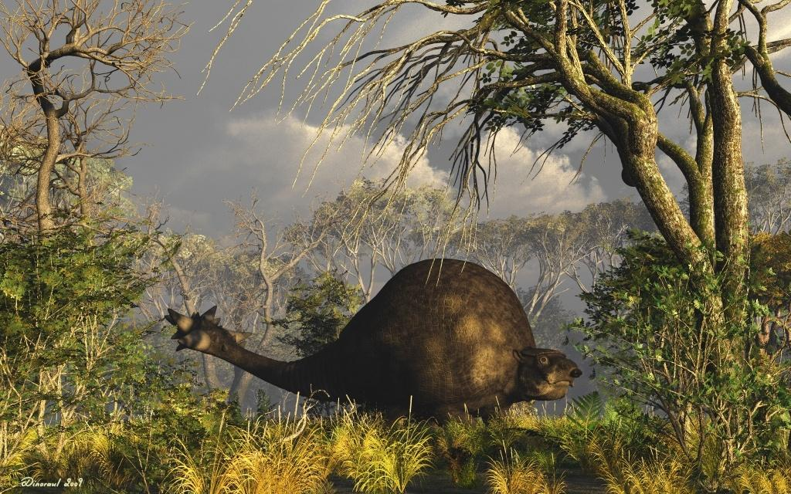

Doedicurus
Rùa Đuôi Chày thế Canh Tân
Tổng quan
Thế
Pleistocene
Họ
Glyptodontinae
Chi
Doedicurus
Dài
3.6 m
Cao
1.5 m
Nặng
1.4 tấn
Thức ăn

Doedicurus là một chi động vật có vú bọc thép lớn đã tuyệt chủng ở thế Pleistocene, bao gồm một loài duy nhất D. Clavicaudatus. Loài này thuộc phân họ Glyptodontinae, là một thành viên của họ Chlamyphoridae, cũng bao gồm một số loài Tatu hiện đại, và chúng được phân loại trong siêu bộ Xenarthra cùng với con lười và thú ăn kiến.
Nguồn: wikipedia.org
Phân bố
Khu vực Nam Mỹ
Thông tin thêm về Doedicurus
Kỷ nguyên và phân bố
Doedicurus sống ở đồng cỏ và rừng cây rộng mở. Trong thời kỳ Pleistocene, khí hậu ôn hòa hoặc mát mẻ. Sự phân bố của chi được giới hạn ở một khu vực lạnh và ẩm ướt ở cuối phía nam của Nam Mỹ. Khí hậu vào thời điểm đó được đặc trưng bởi các chu kỳ điều kiện khí hậu lạnh và ấm. Chúng được gọi là thời kỳ băng hà và gian băng. Các thời kỳ băng hà sẽ có nhiều vùng đất xavan, trong khi các chu kỳ liên băng hà sẽ có rừng nhiệt đới và rừng cây.
Tên khoa học
Năm 1874, nhà động vật học người Đức Hermann Burmeister xếp nó vào chi riêng và đặt tên là Doedicurus Clavicaudatus, tên chi bắt nguồn từ tiếng Hy Lạp cổ đại δοῖδυξ "chày" và oupά "đuôi".
Kích thước
Doedicurus là một trong những thành viên lớn nhất của nhóm Glyptodont. Trung bình, Doedicurus cao khoảng 1.5 mét(4 feet 11 inch) và dài khoảng 3.6 mét(12 feet). Nó nặng trung bình tới 1.4 tấn(3.100 pound). Tuy nhiên, các nhà khoa học tin rằng Doedicurus thậm chí còn lớn hơn ngay trước khi nó bị tuyệt chủng. Do đó, các mẫu vật sau này có thể nặng tới 1.9 đến 2.3 tấn.
Ngoại hình
Giống như các loài Glyptodonts khác, Doedicurus có mai hình vòm trên lưng. Cái này được làm từ những tấm kính được trang bị chặt chẽ tương tự như của những chiếc Tatu ngày nay. Cái mai khổng lồ vừa khít với xương chậu nhưng lỏng lẻo quanh vai. Các chuyên gia cho rằng mái vòm có thể chứa đầy chất béo giống như cái bướu của lạc đà ngày nay. Doedicurus có bốn chân. Tuy nhiên, giống như các loài Glyptodont lớn khác, Doedicurus có thể đứng bằng hai chân.
Một đặc điểm thể chất đáng chú ý khác của Doedicurus là chiếc đuôi chùy nhọn dài 1 mét, nặng 65 kg của chúng. Các nhà khoa học nghĩ rằng nó sẽ là một vũ khí mạnh mẽ mà Doedicurus có thể xoay với tốc độ cao lên đến 40km/h khi quất vào đối thủ.
Chế độ ăn
Doedicurus rất có thể là loài ăn cỏ, bao gồm các loại cỏ mọc thấp hoặc các sinh vật đa bào như tảo. Tuy nhiên, răng và miệng của loài Glyptodont này dường như không thích nghi tốt với việc nhai cỏ một cách hiệu quả. Điều này có nghĩa là Doedicurus sẽ có quá trình trao đổi chất chậm.
Khám phá
Nhà cổ sinh vật học người Anh Richard Owen đã công bố mô tả đầu tiên về Doedicurus Owen vào năm 1847. Đây là loài Glyptodont thứ 5 được mô tả vào thời điểm đó. Hóa thạch là một phần đuôi cho thấy chiếc dùi cui khổng lồ. Ban đầu, Owens gán loài mới vào chi Glyptodon. Tuy nhiên, vào năm 1874, con vật đã được xếp vào chi riêng của nó.
Doedicurus là một loài Glyptodont, có họ hàng gần nhất với Armadillos hiện đại, do đó là một thành viên của siêu bộ Xenarthra (cùng với con lười và thú ăn kiến) đặc hữu của Nam Mỹ. Glyptodonts được xếp vào họ Glyptodontidae. Trong suốt thế kỷ 19 và 20, các loài và chi mới được mô tả trên cơ sở của những khác biệt nhỏ hoặc có thể tranh cãi, và tổng số đa dạng đã đạt tới 65 chi với 220 loài.
Sự tuyệt chủng
Doedicurus rất có thể là thành viên cuối cùng còn sống sót của nhóm Glyptodont. Hồ sơ hóa thạch cho thấy rằng họ có thể đã sống cho đến khoảng 8.000-7.000 năm trước. Giống như nhiều loài động vật lớn đã tuyệt chủng sống trên khắp thế giới vào thời điểm đó, chi này đã tuyệt chủng trong sự kiện tuyệt chủng diễn ra trong kỷ Đệ tứ. Sự kiện tuyệt chủng này là do biến đổi khí hậu và săn bắn quá mức của con người.